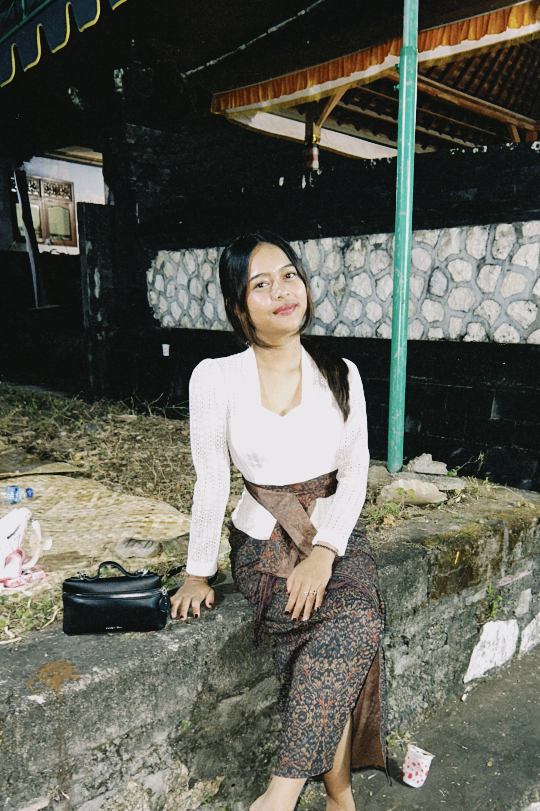
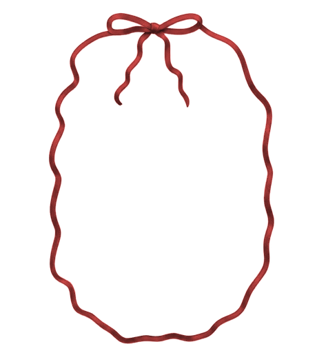

Om Swastyastu
Dengan penuh syukur ke hadapan Ida Sang Hyang Widhi Wasa, kami sekeluarga bermaksud menyelenggarakan upacara Mepandes / Metatah bagi putri kami. Kami mengundang Bapak/Ibu/Saudara/i untuk berkenan hadir memberikan doa restu.
Dea Anggarastya
00
Hari
00
Jam
00
Menit
00
Detik
Makna Mepandes
Enam mata pisau tak kasat mata bersemayam dalam diri manusia — nafsu, tamak, angkara, mabuk kuasa, khilaf, dan iri hati. Melalui mepandes, keenamnya diruncingkan menjadi enam gigi yang diratakan, sebagai simbol kesediaan menaklukkan Sad Ripu dan melangkah menuju kedewasaan yang hening.
Yang Menjalani Upacara


Ni Ketut Dea Anggarastya Shinta Devi
Putri ke-empat dari
I Wayan Sutarma & Ni Made Sri Wiyanthi
What We Provide For You
Beberapa hal yang telah kami siapkan untuk Bapak/Ibu/Saudara/i.
Konfirmasi Kehadiran
Mohon konfirmasi kehadiran Bapak/Ibu/Saudara/i sebelum tanggal 9 Agustus 2026.
Tanda Kasih
Kehadiran serta doa restu Bapak/Ibu/Saudara/i merupakan hadiah yang paling berarti bagi kami. Namun apabila berkenan memberikan tanda kasih, dapat disalurkan melalui:
Transfer Bank — BCA
a.n. Dea Anggarastya
7721294904
Alamat Kado
Jl. Bali Tv, Kutuh, Kec. Kuta Sel., Kabupaten Badung, Bali